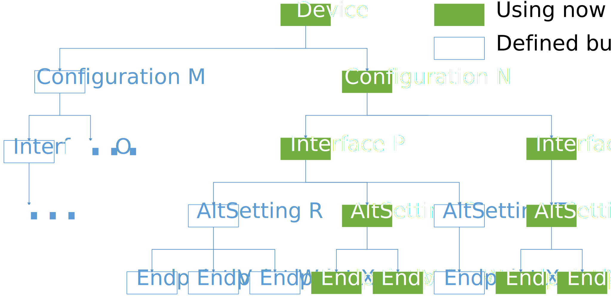
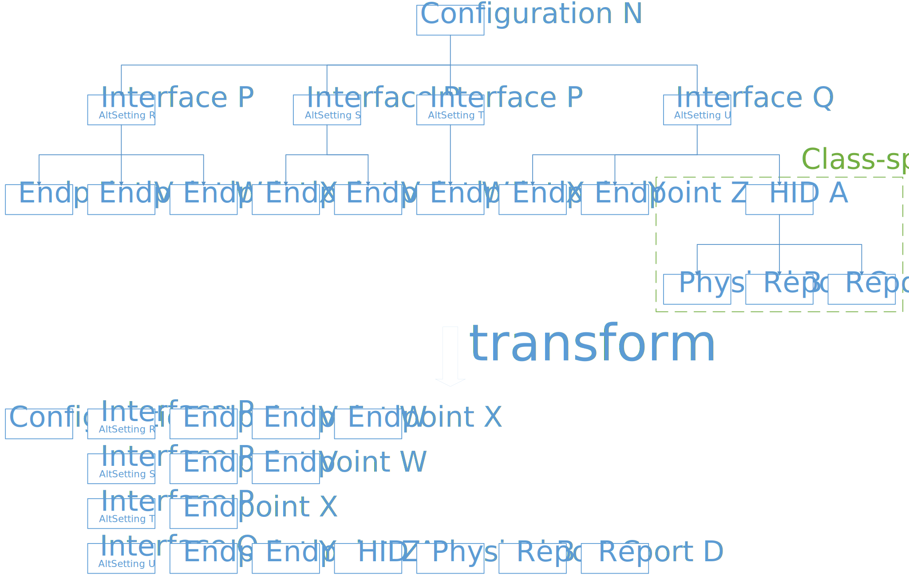

本文紧接着上文关于USB 2.0传输的话题，详细地介绍了USB 2.0标准中提到的请求与描述符这两个部分的内容。在阅读本文后，所有关于USB Device的标准部分均已介绍完毕，接下来便可开始实际的开发工作。
在阅读本文前，建议读者首先阅读USB 2.0标准手册和基本概念和USB 2.0的传输策略详解这两篇文章。本文的难度主要集中于理解USB标准中关于请求和描述符的定义和细节，因此需要配合前两篇文章的知识点才能正确理解USB 2.0标准的Requests和Descriptors。
原创文章，转载请注明出处：MetroCores, www.metrocores.com.
再谈USB 2.0中的Control Transfers
在前文USB 2.0的传输策略详解中，我们谈到了Control Transfers（和那相当蛋疼的传输序列）。不过，我们有意忽略了一个问题：Control Transfers到底传输的是什么？没错，就是我们提到的请求和描述符。
接下来我们来梳理这几个相关的概念。
Requests
所谓的请求，用简单的语言概括，就是一次完整的Control Transfers。这样理解是没错的，但是为什么需要Requests呢？
在USB 2.0标准注1中，Requests的全称应当是USB Device Requests。Host通过Default Pipe这条通道，向Device进行请求，以获得Device的相关信息，并且对Device进行合理配置，主要目的是使Device的其他Endpoint可以根据Host的需要进行工作。
一条请求可以被分为Setup部分和Data部分，正好对应了Control Transfers中的Setup Stage和Data Stage。其中，Setup部分通常指明了请求的方向、类型、目标等多项属性，而（可选的）Data部分则用来传输一些额外信息，传输的方向由Setup部分决定。当然，一次有意义的传输还需要Status Stage，不过在这里我们可以暂时忽略。
Descriptors
描述符是一种特殊的数据结构，可以用来组成一次请求的Data Stage，但不是来自Device的回应都是描述符。对于Host的请求，有些Device需要回应的信息相对比较复杂，这个时候就需要用描述符这样的结构来表达了。描述符是一套Device与Host（通过驱动）事先“商定”好的“语言”，Host能够“阅读”并“翻译”来自Device的描述符。因此，描述符的全称也应当是Device Descriptors。
Standard, Class and Vendor
在USB 2.0标准注1中，请求和描述符都可以被分成三种，即Standard、Class和Vendor，三者的定义和作用既相似又不同。
Standard注3用来描述在主标准中定义的请求和描述符。这些请求和描述符通常用来实现USB Device的最基本功能，例如识别设备、获取基本状态等。大部分的请求和描述符都是必须实现的，否则将会导致Host无法与设备进行正常交互。
Class用来描述在设备类标准注2中定义的请求和描述符。USB 2.0的相关标准中，将Device中一些共同的功能提取出来编成标准，就成了Device Class。设备类标准通常用于实现通用功能，如键盘、U盘等，设备可以选择性地实现多个设备类标准中的部分或所有功能。这样做的好处是，对于每一个Class，只需要提供通用驱动，就可以让遵循设备类标准的设备可以正常工作，从而大大降低了编写设备驱动的工作量。现在Class的标准数量已经非常巨大，能实现的功能也非常多，对于目前常用的设备基本上能提供良好的支持。
Vendor则是一个产品上所使用的私有标准，通常是设备制造商自行定义的标准。在不与Standard和Class标准冲突的前提下，Vendor标准可以自由定义，从而使得设备的实现更加灵活。
现在看来，Control Transfers的概念已经基本上都清楚了。本质上说，Default Pipe的作用就是用来传输低频率、低数据量的控制信息，从而使得其他的Pipes可以更好地工作。这也就是为什么Control Transfers的优先级最高的原因。
USB Device的框架
前面我们在通信流模型中提到，USB Device的通信流可以分为三层，分别是Device、Interface和Endpoint。但是，在Device的总体框架中，为了得到更好的通用性，USB标准注1在Device和Interface之中又增加了名为Configuration的一层，并且在Endpoint中增加了名为Alternate Setting的属性，相当于是在Interface和Endpoint中增加了一层。这些新增的内容能让我们更好地设置Device的属性。

USB Device的框架如上图所示。我们来自上而下地盘点一下。
Device
指的是一个物理存在的设备，也就是设备实体。USB标准注1规定，一个Device只能有一对Vendor ID和Product ID，分别指代制造商和产品代号。除此之外，Device还包括了一些设备的基本信息，如使用的类和协议等。
Configurations
指的是设备的配置信息。一个Configuration对应的是一组设备层次的属性和最大电流，以及包含的一组接口。目前来看，Configuration的作用就是提供不同供电条件下的不同配置，实际上用到Configuration的情况并不多。
Interfaces
指的是设备的接口。一个Interface对应的主要是一组端点，这些端点共同完成一项基本的功能（如文件传输需要读写两个端点），当然也可以在Interface的层面定义使用的类和协议，还有所使用的可用配置注4。
Alternate Settings
指的是接口的可用配置。这是一个新的概念，主要用来对Interface进行额外的配置。通过为同一Interface设置不同的Alternate Settings，可以在设备运行时动态选择不同的Endpoints组合。默认情况下被选中的总是第0个可用配置。举个例子，可以通过指定Alternate Settings来设置bInterval的值，从而改变中断传输的传输频率。
Endpoints
指的是接口的端点。这个概念我们提了很多次，就不再赘述了。需要注意的是，Endpoints在Configurations以下的范围是不应该重复的，即一个端点只能被定义一次。
从USB Device的框架出发，USB标准定义了USB Device的标准请求和标准描述符，并且允许Device在不与现有标准冲突的前提下定义Class和Vendor级别的请求和描述符。
请求的格式和类型
USB Device Requests可以分为Standard、Class和Vendor，它们都遵循相同的格式。
请求的格式
Requests的Setup Stage（即Setup Data）为8 bytes的数据，内容如USB 2.0标准注1中的表格9-2所示，这里不再列出。
bmRequestType
该变量记录了请求的基本信息，包括传输方向、请求类型和请求对象，共占用1个字节。这些信息有助于Device获得Data Stage和Status Stage需要完成的动作。
bRequest
该变量表明这次请求的具体类型，共占用1个字节。该信息与请求类型通常是相关的。
wValue
该变量表明这次请求中需要传输的变量值，共占用2个字节。该信息与请求类型通常是相关的。
wIndex
该变量表明这次请求中需要传输的变量值，该变量值通常用来表示索引值或偏移量，共占用2个字节。该信息与请求类型通常是相关的。
wLength
该变量表明这次请求中Data Stage的长度，以字节为单位，共占用2个字节。
总的来说，Requests除了将bmRequestType和wLength之外，其他格式都是需要根据不同的请求类型进行定义的，这样可以增加请求格式的灵活性。Descriptors的思路也是相似的。
Standard Requests
Standard Requests的bRequestType共有11种，如表9-4所示。每种Standard Requests的详细格式已在表9-3定义。
GET_DESCRIPTOR
获取相应的描述符，Data Stage的传输方向是从Device到Host。可以选择的目标是Device、Configuration和String。到后面我们会了解到，描述符其实不只包括这三种，但是在回应Request时可能需要回应目标以外的描述符，这个稍后再说。
SET_DESCRIPTOR
设置相应的描述符，Data Stage的传输方向是从Host到Device。可以选择的目标同样是Device、Configuration和String。顾名思义，这是用来设置描述符的Request，被设置的描述符必须存在注5。这个Request似乎很少被用到。
GET_CONFIGURATION
获取当前使用的Configuration Number，Data Stage的传输方向是从Device到Host。要注意获取的不是Configuration Descriptor。
SET_CONFIGURATION
设置当前使用的Configuration Number，没有Data Stage。与描述符一样，设置时必须指定合法的Configuration Number。
GET_INTERFACE
获取某个Interface当前使用的Alternate Setting，Data Stage的传输方向是从Device到Host。要注意获取的不是Interface Descriptor。
SET_INTERFACE
设置某个Interface当前使用的Alternate Setting，没有Data Stage。与描述符一样，设置时必须指定合法的Interface Number和Alternate Setting。
SET_FEATURE
设置相应的特性，没有Data Stage。可以选择的目标是Device、Configuration和Endpoint。目前支持的feature有三项，除了DEVICE_REMOTE_WAKEUP和ENDPOINT_HALT（这两个一看名字就知道目标是谁了）之外，还有目标为Device的TEST_MODE。
CLEAR_FEATURE
清除相应的特性，同样没有Data Stage。可以选择的目标同样是Device、Configuration和Endpoint。要注意的是，无法通过CLEAR_FEATURE退出TEST_MODE，而只能通过重新上电的方式退出注6。其他与SET_FEATURE相同。
GET_STATUS
获得相应的状态，Data Stage的传输方向是从Device到Host。可以选择的目标是Device、Configuration和Endpoint。虽然如此，实际上可以获得的Status只有Remote Wakeup(Device)、Self Powered(Device)和Halt(Endpoint)这三项。
SET_ADDRESS
为设备指定Address，没有Data Stage。Address用来识别总线上的设备，一般只在初始化的Address阶段由Host发送。
SYNCH_FRAME
设置用于同步的Frame Number，Data Stage的传输方向是从Device到Host。这项功能仅在使用等时传输时需要用到，作用是与Host共同确认用来传输同步信息的Frame。所谓的同步信息的定义是依赖于实现的，标准仅提供了基本的框架。
Class Requests
Class Requests包含了设备类标准中定义的各种请求注2，这些请求都符合相关设备类的标准。Class Requests的bmRequestType的D6…5被指定为Class。
Class Requests的定义在设备类标准中可以查阅到。有些Class Requests可能大家已经耳熟能详了，比如HID中的GET_REPORT和SET_REPORT。有兴趣的读者可以关注后面对于具体设备类的分析的文章。
Vendor Requests
Vendor Requests包含了Vendor自定义的标准中定义的各种请求。Class Requests的bmRequestType的D6…5被指定为Vendor。
在自己定义Vendor Requests时，建议参考Requests的数据域定义和其他设备类标准的定义，但也可以根据实际需要进行修改。
描述符的格式和类型
与Requests类似，USB Descriptors也可以分为Standard、Class和Vendor，但格式并不完全一致，而且对于同一种描述符也可能是可变的。
描述符的格式
虽然描述符的格式千差万别，但是有些描述符的格式确实类似的。例如，所有的Standard Descriptors的第0和第1个字节都分别是bLength和bDescriptorType，如果Class Descriptors或Vendor Descriptors使用了类似的结构，那么在定义描述符时，就最好与类似功能的Standard Descriptors使用类似的结构（说起来真是绕口）。
Standard Descriptors
Standard Descriptors的bDescriptorType共有8种，如表9-5所示。除了INTERFACE_POWER找不到，且DEVICE_QUALIFIER等价于DEVICE、OTHER_SPEED_CONFIGURATION等价于CONFIGURATION之外（当然数据域并不相同，因为省略了一部分重复信息），剩下的没什么好说的，看标准吧。
Class Descriptors
Class Descriptors包含了设备类标准中定义的各种描述符注2，这些描述符都符合相关设备类的标准。
Vendor Descriptors
Vendor Desriptors包含了Vendor自定义的标准中定义的各种描述符。
设备标准请求与响应的流程
这部分内容实际上是和后面文章中要提的USB Device状态机设计是重合的，因此我们只说明对于描述符请求需要回应的内容 （即bRequest为GET_DESCRIPTOR时的请求），而略去其他的部分。
bDescriptorType == DEVICE
设备描述符通常是Host向Device请求的第一个描述符，因为Device Descriptor通常记录了设备的最基本信息。需要注意的有以下几点：
- bcdUSB的值会影响接下来的请求。举个例子，如果bcdUSB的值为200H（意味着使用USB 2.0标准），但此时Device工作在全速模式下，则Host会紧接着发送Device_Qualifier描述符的请求，以尝试获得Device在高速模式下的信息。对于使用USB 2.0标准的全速设备，必须要正确处理此请求，下面再提。
- bDeviceClass、bDeviceSubClass和bDeviceProtocol的值必须符合要求。在USB标准注1中，规定只有在Device Descriptor或者Interface Descriptor中才有关于Class的信息，而Class应在哪里声明需要满足设备类标准注2的定义。对于Class在Device Descriptor中声明的情况，Interface Descriptor中就有可能不需要再声明，反之亦然。对于不指定Class的情况，这三项应当保持为0（对于某些设备类标准）或FFH（对于Vendor自定的标准）。
- bMaxPacketSize0的选择与当前工作的速度有关。简单来说，低速时只能为8，高速时只能为64，而全速时只能为8、16、32、64中的一个。
- 对于iManufacturer、iProduct和iSerialNumber不为0的情况，数据域的值表示了String Descriptor的编号，Host会紧接着请求对应的String Descriptor。
bDescriptorType == DEVICE_QUALIFIER
前面已经提到这个描述符了，简单来说就是，如果Host发出了这个请求，且Device确实可以工作其它速度下，那么Device就必须返回该描述符；否则，Device应该回应STALL，以表示不支持该功能。这对于bcdUSB为200H的全速设备来说是需要注意的一点。
bDescriptorType == CONFIGURATION
在Host向Device请求设备的配置时，返回的不只是Configuration Descriptor，而是要包括Configuration层次下的所有操作符；也就是说，回应的内容可能会出现以下的操作符：
- Configuration Descriptor
- Interface Descriptor
- Endpoint Descriptor
- Class-specific Descriptor
那么，回应的操作符应该按照什么样的顺序进行排列呢？我们来举个例子复杂点的例子。相信无需多言，大家应该能够理解如何回复配置的请求了。

上图有几点是应当在意的：
- Descriptor的定义方式与之前的框架非常相似。但是，还是有两点不同：一是Interface和Alternate Setting都被定义在Interface Descriptor中注7，二是设备类定义的描述符（如果有的话）一般是紧跟在Endpoint Descriptor之后被定义。
- 在回应关于配置的请求时，需要按照先序遍历的方式进行的。所谓的先序遍历，就是“先访问根节点再访问其子树”的过程，这样可以保证Host获得完整的信息。在对描述符形成的树状结构进行先序遍历后，得到的就是如图所示的结果。
- 一个配置内所有的描述符都是首尾相连的，不需要进行额外的分割操作。也就是说，我们可以事先将所有描述符定义为一个没有分隔符的数组，并且在回复时将这个数组的所有内容按照先后顺序发送到Host即可。当然，在发送时需要满足数据长度不超过bMaxPacketSize0的条件，且最后一个数据包也要满足长度小于bMaxPacketSize0。
- 在2中，我们可以发现有一个问题：请求时回复的数据总长度并不是个定值，也就是说Host无法提前了解到Request中的bLength应该被设置成何值。这个问题的解决方法是，在第一次请求配置时，Device首先回复的只有Configuration Descriptor，而后Host需要在Configuration Descriptor中读取wTotalLength，之后再发起一次同样的请求，区别是这次bLength会被设置为wTotalLength。这样就解决了无法提前获知数据长度的问题。
对于请求配置仍有问题的同学，建议使用协议分析工具（强烈推荐wireshark）抓次包看看，会对请求配置有更深刻的理解。
bDescriptorType == OTHER_SPEED_CONFIGURATION
这个与CONFIGURATION的情况类似，就不再多说了。如果DEVICE_QUALIFIER的回复为STALL，那么此请求的回复也应为STALL。
bDescriptorType == STRING
请求字符串描述符。这个要分成两种情况讨论：
- Descriptor Index为0的情况（注意不是wIndex！）。此时Device要回复的是支持的LANGID数组，以向Host表明其支持的LANGID。如果没有String Descriptor，那么就不应该回复LANGID数组，也就是bLength为2。
- Descriptor Index不为0的情况。此时wIndex定义的是字符串描述符的LANGID，Device应该根据LANGID来回复合适的字符串描述符。回复的bString数据域应该使用Unicode编码。
bDescriptorType 为其它值
除了出处不明的INTERFACE_POWER还需要进一步查阅资料之外，bDescriptorType取其它值都是非法的，直接回复STALL就是了。
总结
说了这么多，感觉还是不能很好地将USB关于请求和描述符的部分梳理清楚，主要还是这部分知识点过于支离破碎的缘故。希望这篇文章能让大家先有个粗浅的认知，而后应当结合标准仔细阅读，这样方能掌握相关的概念。
注释
- USB Specification Revision 2.0
- USB Device Class Specifications
- 为了使文章更容易理解，Standard与Specification都翻译成标准，但意思其实并不相同，后者翻译成“规范”或许更为合适，但不符合人们的表达习惯，因此本文使用上述翻译。
- 即Alternate Settings，由于没有找到合适的中文翻译，所以用了这么一个词，意会一下即可。
- 举个例子，如果共有5个String Descriptors，那么可指定的Index是0到4。
- USB 2.0标准中第259页的第3行：… The device must have its power cycled to exit test mode.
- USB标准并没有规定应该按照怎样的顺序排列Interface Descriptor；也就是说，对于描述符组成的树状结构，Interface这一级的遍历顺序是任意的。这也适用于Endpoint Descriptor以及可能出现的Class-specified Descriptor，除非有额外的要求。